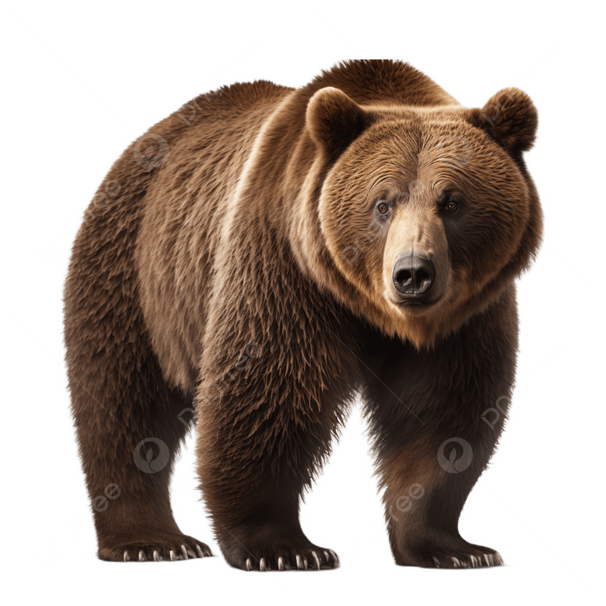
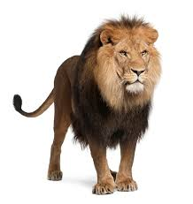
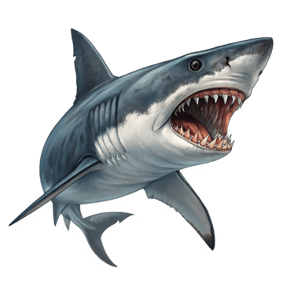

El oso es un mamífero carnívoro de la familia Ursidae, caracterizado por su gran tamaño,
pelaje espeso y alimentación omnívora. Simbólicamente representa fuerza, protección,
introspección y renovación (hibernación).

El león (Panthera leo) es un gran felino carnívoro, reconocido por su melena (machos),
vida social en manadas y rugido potente. Habita principalmente en la sabana africana,
es un superdepredador que caza en grupo.

Los tiburones son peces cartilaginosos depredadores, pertenecientes al grupo de los elasmobranquios,
caracterizados por tener un esqueleto de cartílago, varias filas de dientes y vivir en todos los mares.
